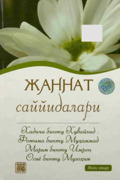

JSJannat ayollarining ulug' siratlari va hayot yo'llaridan hikoya qiluvchi ma'naviy kitob.
Ushbu kitob Islom tarixidagi eng ulug' va pokiza ayollar — Jannat sayyidalari bo'lgan Xadicha bintu Xuvaylid, Fotima bintu Muhammad, Maryam bintu Imron va Osiyo bintu Muzohimlarning hayoti va siratiga bag'ishlangan. Asar har bir muslima ayol va qiz uchun go'zal o'rnak va ma'naviy yo'lboshchi bo'lishga xizmat qiladi.